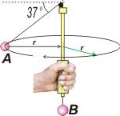
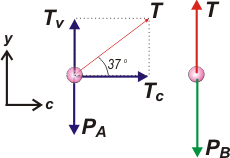

NO ME SALEN
PROBLEMAS RESUELTOS DE FÍSICA DEL CBC
(dinámica de las rotaciones)
|
|

|
| NMS d3.25* - Un cuerpo A gira en el plano horizontal mantenido por una cuerda ideal que pasa por una polea (también ideal) , por un tubo vertical y de la que cuelga el cuerpo B, como se muestra en la figura adjunta. El cuerpo A realiza un movimiento circular uniforme alrededor del tubo, siendo su radio de giro de r = 30 cm. Si el cuerpo B permanece en reposo, ¿cuál es la velocidad con la que gira el cuerpo A? |
 |
a) 1,5 m/s b) 2 m/s c) 4 m/s d) 5 m/s e) 8 m/s f) 10 m/s |
|
|
| *Este ejercicio formó parte del final de Física tomado el 7 de diciembre de 2018. Para ver el examen completo haga click ACÁ. |
|
|
|
| Como en todo ejercicio de dinámica tenemos que arrancar con un DCL, pero... |
|
|
|  |
Como ves, elegí un sistema de referencia en dirección al centro de giro y otro vertical.
Sobre el cuerpo A actúna el peso, PA, y la tensión, T (que ya descompuse).
Sobre el cuerpo B, su peso, PB, y la tensión (que es la misma que en A porque la soga es ideal. |
|
|
|
Además tenemos:
TV = T . sen 37º
TC = T . cos 37º
Las ecuaciones de Newton dicen:
TV = mA . g
TC = mA ω² . R
T = mB . g
|
[1]
[2]
[3]
[4]
[5] |
|
|
|
Donde es la velocidad angular del cuerpo A. Combinemos las ecuaciones. Igualo la [2] con la [4]:
T . cos 37º = mA ω² . R
Y la [1] con la [3]
T . sen 37º = mA . g
Divido la última por la anterior:
tg 37º = g / ω² . r
Y despejo ω:
ω = 6,651 s-1
Basta con que lo multipliquemos por el radio de giro de A para hallar su velocidad.
v = ω . r
v = 6,651 s-1. 0,3 m
|
|
|
|
|
|
Como viste, no fue necesario utilizar la ecuación [5]. Esas cosas, a veces, pasan. |
|
|
| DESAFIO: ¿Será que el peso de B no afecta al movimiento de A? |
|
 |
| Algunos derechos reservados.
Se permite tu reproducción recitando en la fuente. Última actualización dic-18. Buenos Aires, Argentina. |
|
|
|